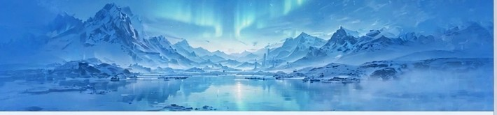

冰川极光：七日挪威峡湾徒步纪实
当极光划破北极圈的夜空，吕瑟峡湾的冰川在星光下泛着冷调的蓝。七日徒步，穿越最震撼的峡湾线，从卑尔根出发，深入极地边缘，体验冰与光的诗篇……

累积更新 · 共二十一篇
当极光划破北极圈的夜空，吕瑟峡湾的冰川在星光下泛着冷调的蓝。七日徒步，穿越最震撼的峡湾线，从卑尔根出发，深入极地边缘，体验冰与光的诗篇……
休假后的第一件事就是出去旅游啦。这是一篇迟到的暑中期旅游分享帖！当时是 18–19w，暑中期后孕反消失，感觉身轻如燕，检查一路绿灯，于是说走就走，选了云南，主打一个休闲式穷游……
雨停了，巷子里的你弥漫着潮湿的气息。茶烟从屋檐缝隙升起，行船划开，桂台边民在低语。有些下午，就该浪费在发呆里……
秋叶渐落时，墨色也染了季节。予宣纸统一笔云烟，往山风里散去远方。有些路，适合在秋天慢慢走……